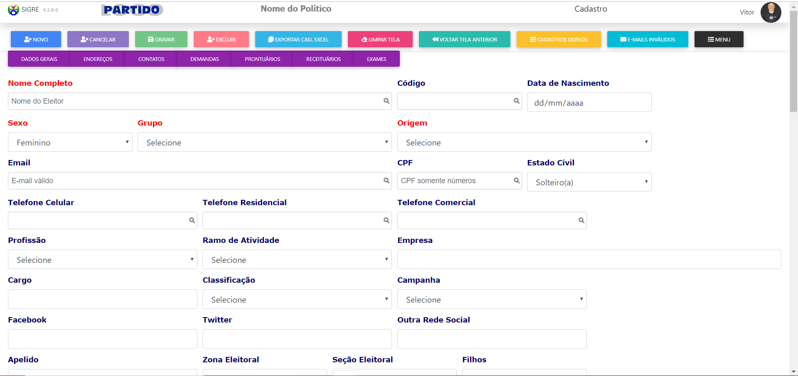
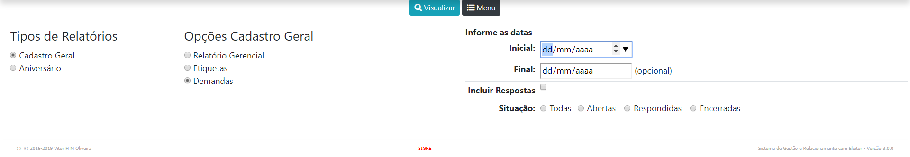

SIGRE - Sistema Integrado de Gestão e Relacionamento com Eleitor
Manual
Este Sistema se destina ao uso por parte de políticos. Sem uso é gratuito (free) desde que seja autorizado pelo proprietário.
Em todo sistema, sempre que aperecer a lupa , significa que este campo é destinado à pesquisa. Utiliza o recurso igual ao Google, onde o usuário começa digitar o texto e logo abaixo é sugerida a informação que já consta no banco de dados.
É só clicar em cima de um item da lista que a pesquisa é realizada.
É só clicar em cima de um item da lista que a pesquisa é realizada.
- 1. Agenda
- 2. Cadastros de Apoio
- 3. Cadastro de ELEITORES
- 4. Demandas
- 5. Relatórios/Etiquetas
- 6. Segurança
- 7. Tarefas
-
O Sistema utiliza o Google Agenda. É criada uma conta só para utilização no sistema. Você poderá compartilhá-la e configurá-la como desejar, desde que faça login com esta conta no Google.
Exemplo da Agenda -
Ao cadastrar um eleitor, alguns campos têm informações pré-determinadas e não aceitam digitação. Estas informações podem ser adicionadas, excluídas ou alteradas
São os chamados Cadastros de Apoio. São eles:
CAMPANHA = Cadastro com os códigos da relação do eleitor para com a campanha política. Ele auxilia na informação correta e padronizada.

Exemplo da tela do cadastro de Campanha
CEP = Cadastro com os CEPs do Brasil. Para inclusão de endereços dos eleitores, ele auxilia na informação correta e padronizada.
Exemplo da tela do cadastro de Ceps
GRUPOS = Cadastro com os códigos dos Grupos. Ele auxilia na informação correta e padronizada.
Se a quantidade de registros for maior que zero, clique na descrição que listará na tela os cadastros pertencentes a este grupoExemplo da tela do cadastro de Grupos
ORIGENS = Cadastro com os códigos das Origens. Ele auxilia na informação correta e padronizada.
Se a quantidade de registros for maior que zero, clique na descrição que listará na tela os cadastros pertencentes a esta origemExemplo da tela do cadastro de Origens
PROFISSÕES = Cadastro com os códigos das Profissões. Ele auxilia na informação correta e padronizada.
Se a quantidade de registros for maior que zero, clique na descrição que listará na tela os cadastros pertencentes a esta profissãoExemplo da tela do cadastro de Pofissões
RAMOS DE ATIVIDADES = Cadastro com os códigos dos Ramos de Atividades. Ele auxilia na informação correta e padronizada.
Se a quantidade de registros for maior que zero, clique na descrição que listará na tela os cadastros pertencentes a este ramo de atividadeExemplo da tela do cadastro de Ramos de Atividades
SECRETARIAS = Cadastro com os códigos das Secretarias. Ele auxilia na inclusão de demandas com informação correta e padronizada.
Exemplo da tela do cadastro de Secretarias -
Principal tabela do sistema, armazena as informações dos eleitores.
PARA INCLUIR, CLICAR NO BOTÃO e após aparecer o CÓDIGO do Eleitor, são liberados os demais botões e poderão ser colocadas as informações.
Para efetivar as atualizações clicar emExemplo da tela do Cadastro -
São solicitações feitas ao Gabinete que gerarão pedidos aos diversos órgãos públicos. Ao cadastrar uma demanda, ela fica "vinculada" a um eleitor e pode ser
facilmente consultada. É possível anexar documento formato pdf e imagens tipo jpg. Ao registrar uma resposta à demanda poderá ser enviado e-mail ao solicitante com esta resposta
Se for designado um responsável(usuário do gabinete) para a demanda, será gerada uma tarefa automaticamente para este usuário.
Para consultar a demanda, basta clicar no nome do eleitor.Exemplo da tela principal de demandas
Exemplo da tela de consulta de uma demanda
Exemplo da tela de resposta de uma demanda -
O sistema tem dois
tiposde relatórios/etiquetas:Cadastro Geral com opções de Relatório Gerencial, Etiquetas e Demandas; Aniversários com opções de Etiquetas e Relação de Aniversariantes.Tela de Opções do Cadastro Geral
Tela de Opções do Aniversário

As opções do Cadastro Geral
As opções das Demandas
-
Nesta opção serão realizados os controles do sistema. Inclusão de usuários (do sistema), Controle de acesso ao sistema por usuário e Alteração de Senhas.
Usuários são pessoas ligadas ao gabinete que poderão utilizar o sistema!Tela de Usuários
Tela exemplo em que o administrador define o que cada usuário poderá fazer no sistema
-
São "tarefas" que o Chefe do Gabinete/Administrador define aos usuários do sistema. O usuário registrará cada ação realizada na tarefa.
Tela de Tarefas
Tela de Inclusão de Tarefas